Special Functions librarySpecial Functions library
Special Functions librarySpecial Functions libraryThe Special Functions library currently provides three templated special functions, in namespace boost. Two of these (sinc_pi and sinhc_pi) are needed by our implementation of quaternions and octonions.
The function atanh is entirely classical, the function sinc_pi sees heavy use in signal processing tasks, and the function sinhc_pi is an ad'hoc function whose naming is modelled on sinc_pi and hyperbolic functions.
The exponential function is defined, for all object for which this makes sense, as the power series 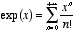, with 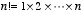 (and 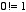 by definition) being the factorial of  . In particular, the exponential function is well defined for real numbers, complex number, quaternions, octonions, and matrices of complex numbers, among others.
. In particular, the exponential function is well defined for real numbers, complex number, quaternions, octonions, and matrices of complex numbers, among others.

Graph of exp on R
_on_C.png)
_on_C.png)
Real and Imaginary parts of exp on C
The hyperbolic functions are defined as power series which can be computed (for reals, complex, quaternions and octonions) as:
Hyperbolic cosinus: 
Hyperbolic sinus: 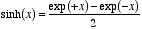
Hyperbolic tangent: 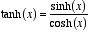

Trigonometric functions on R (cos: purple; sin: red; tan: blue)

Hyperbolic functions on r (cosh: purple; sinh: red; tanh: blue)
The hyperbolic sinus is one to one on the set of real numbers, with range the full set of reals, while the hyperbolic tangent is also one to one on the set of real numbers but with range 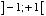, and therefore both have inverses.
The inverse of the hyperbolic tangent is called the Argument hyperbolic tangent, and can be computed as 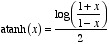.
The Sinus Cardinal family of functions is defined by the family of indices 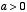 by 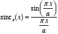. It is also an entire function (sum of a power series).
We define, by analogy, the Hyperbolic Sinus Cardinal family of functions is defined by the family of indices  by 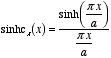. It, too, is an entire function.
by 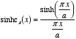. It, too, is an entire function.

Sinus Cardinal of index pi (purple) and Hyperbolic Sinus Cardinal of index pi (red) on R
The mathematical text has been typeset with Nisus Writer, and the illustrations have been made with Graphing Calculator. Jens Maurer was the Review Manager for this library. More acknowledgements in the History section. Thank you to all who contributed to the discution about this library.
The interface and implementation for each function (or forms of a function) are both supplied by one header file:
The special_functions_test.cpp test program tests the functions for float, double and long double arguments (sample output).
It has been compiled and runs without error with the following C++ compilers:
- MetroWerk's CodeWarrior Pro 6 on a Mac on a PowerPC G3
namespace boost
{
namespace math
{
template<typename T> inline T atanh(const T x);
template<typename T> inline T sinc_pi(const T x);
template<typename T, template<typename> class U> inline U<T> sinc_pi(const U<T> x);
template<typename T> inline T sinhc_pi(const T x);
template<typename T, template<typename> class U> inline U<T> sinhc_pi(const U<T> x);
}
}The functions implemented here can throw standard exceptions, but no exception specification has been made.
template<typename T> inline T atanh(const T x);Computes the reciprocal of the hyperbolic tangent function, at
x.If
xis outside the range ] -1 ; +1 [ , anout_of_rangeexception is generated.For the value -1 , minus infinity is returned (if the system allow, otherwise an
out_of_rangeexception is generated).For the value +1 , plus infinity is returned (if the system allow, otherwise an
out_of_rangeexception is generated).
template<typename T> inline T sinc_pi(const T x);template<typename T, template<typename> class U> inline U<T> sinc_pi(const U<T> x);Computes the Sinus Cardinal of
x. The second form is for complexes, quaternions, octonions...
template<typename T> inline T sinhc_pi(const T x);template<typename T, template<typename> class U> inline U<T> sinhc_pi(const U<T> x);Computes the Hyperbolic Sinus Cardinal of
x. The second form is for complexes, quaternions, octonions...
namespace math.
special_functions.hpp into atanh.hpp, sinc.hpp and sinhc.hpp; improved efficiency of atanh with compile-time technique (Daryle Walker); improved accuracy of all functions near zero (Peter Schmitteckert).
Revised 11 July 2001
© Copyright Hubert Holin 2001. Permission to copy, use, modify, sell and distribute this document is granted provided this copyright notice appears in all copies. This software is provided "as is" without express or implied warranty, and with no claim as to its suitability for any purpose.